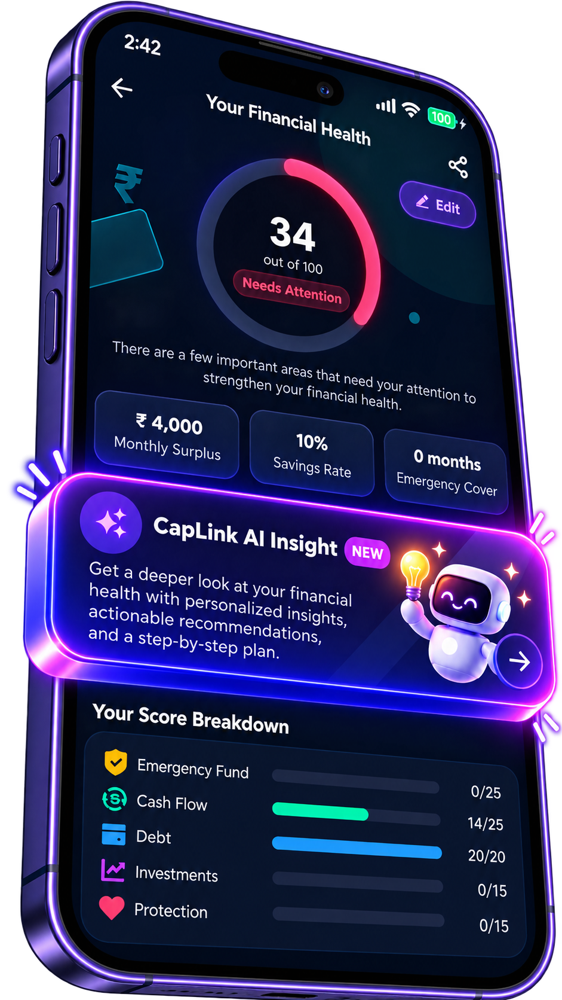
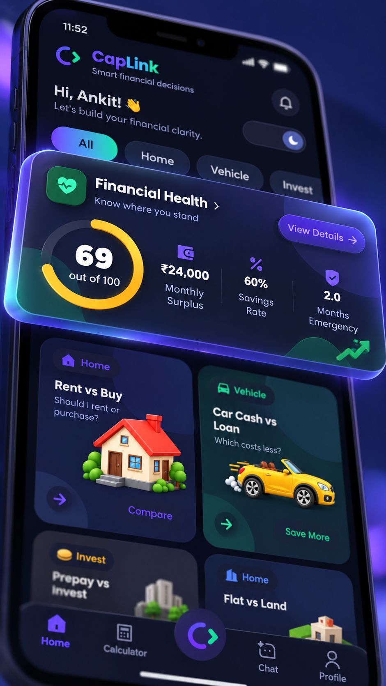

Cash Flow
How much is left each month after expenses and EMIs, and what share of income you're able to save.
Financial Health
Financial Health brings your income, spending, savings, debt, and cover together into one simple score — and shows which areas could use attention first.

A score out of 100 built from the answers you give about your finances. Higher means your basics look stronger based on those inputs; lower highlights areas to work on.
Important: The score is an educational planning tool based on information you provide. It is not a credit score, investment rating, or professional financial assessment.
Know where you stand
Illustrative values for demonstration only.
Each area reflects a part of a steady financial base. Together they help you see where to focus.
How much is left each month after expenses and EMIs, and what share of income you're able to save.
How many months of essential expenses your readily available savings could cover if income stopped.
How your loan repayments compare with your income, and whether debt might be limiting your flexibility.
Whether some of your savings are invested for long-term goals rather than sitting idle.
Whether you have life and health insurance cover in place, considering your dependents.
The goals you set — like wealth creation or retirement — help shape the insights and next steps you see.
CapLink AI Insight
Want more than a number? CapLink AI Insight offers a deeper look at your Financial Health with personalized observations and a step-by-step plan to consider.
AI-generated insights are educational and may contain errors. They are not professional financial advice.

FAQ
Financial health describes how well your day-to-day finances and safety nets are working — for example whether you have money left over each month, savings for emergencies, manageable debt, investments for the future, and insurance protection.
An emergency fund is money set aside in readily available savings to cover essential expenses if your income stops or an unexpected cost appears. It is often measured in months of expenses.
Cash flow is what remains after your monthly expenses and EMIs. A positive cash flow gives you room to save, invest, and handle surprises; a negative one can lead to more borrowing.
CapLink combines your answers about areas such as emergency fund, cash flow, debt, investments, and protection into a score out of 100, with a breakdown for each area. It is an educational planning tool based on the information you provide — not a credit score or professional assessment.
Answer a few questions in CapLink and see where you stand today.